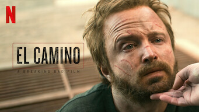
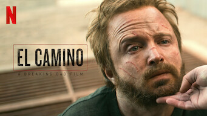
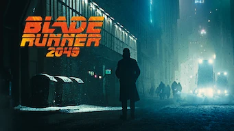
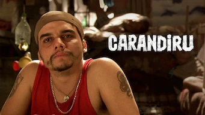
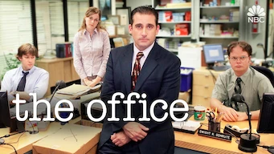
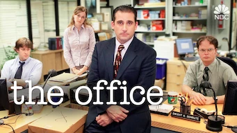

Breaking
Bad
2008 | 16+ | 5 Seasons | Tv Series
Breaking Bad é uma série de televisão aclamada pela crítica que foi exibida originalmente de 2008 a 2013 e está atualmente disponível para streaming na Netflix. A série acompanha Walter White, um professor de química do ensino médio que se torna fabricante de metanfetamina, enquanto se une ao ex-aluno Jesse Pinkman para garantir o futuro financeiro de sua família após ser diagnosticado com câncer terminal.
Criador: Vince Gilligan
Generos: Drama, Crime, Ação
Séries para maratonar


 



Anime


Filmes Aclamadas pela Crítica




Séries Aclamadas pela Crítica

 
